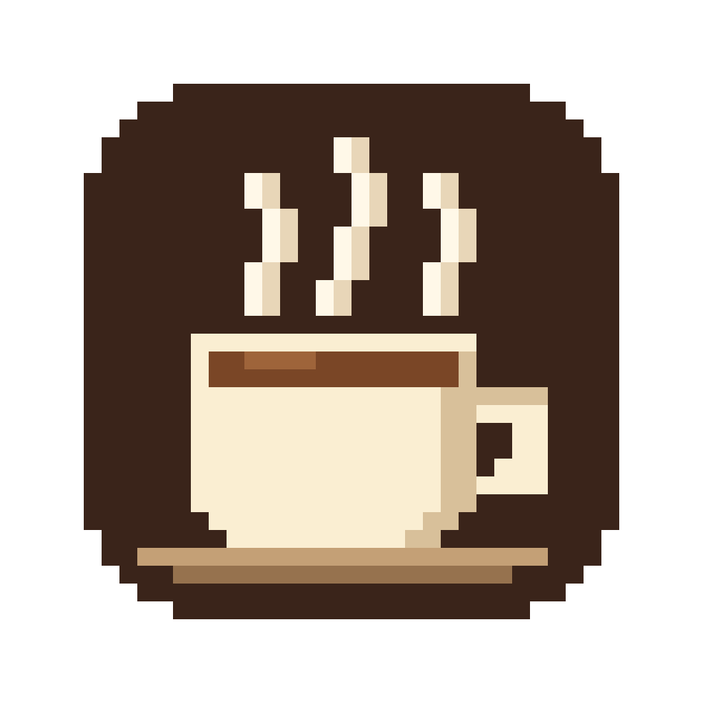

合盖继续运行
开启合盖模式后，屏幕可以熄灭，后台任务继续。关闭 Steamcup 或定时结束后，恢复合盖睡眠。

Steamcup菜单栏里的一只像素咖啡杯。编译、渲染、跑 Agent 时，让 Mac 保持唤醒；忙完了，再好好休息。
v1.3.2 Alpha · 免费开源 · macOS 14+
合盖模式首次开启需管理员授权。首次安装说明
点一下杯子，开始保持唤醒。再点一下，恢复正常睡眠。定时、合盖和锁屏选项，都在右键菜单里。
功能示意短片。查看 1 分半英文讲解 →
开启合盖模式后，屏幕可以熄灭，后台任务继续。关闭 Steamcup 或定时结束后，恢复合盖睡眠。
选择 30 分钟到 8 小时的定时，菜单栏显示剩余时间。也可选择锁屏时暂停，解锁后继续。
编译、转视频或运行脚本，让保持唤醒跟着任务走。命令结束后自动释放本次唤醒。
steamcup run -- <你的命令>先设置命令行入口 →将 Steamcup.app 拖进「应用程序」文件夹。
点菜单栏里的杯子开启或关闭；右键打开定时和其他选项。快捷键：⌃⌥W。
勾选 Keep Awake with Lid Closed。首次需要管理员密码，授权改变系统合盖睡眠设置，并安装后台恢复检查。
首次打开：当前版本尚未经过 Apple 公证，macOS 可能阻止打开。确认来源后，按安装说明在「系统设置 → 隐私与安全性」中处理。
合盖运行时保持通风。程序设有过热和低电量停止机制，但还未在真实过热、低电场景下验证触发效果。
下载包面向 macOS 14 及以上，包含 Apple 芯片和 Intel 两种架构。目前真机验证来自 macOS 26 的 Apple 芯片 Mac；macOS 14–15 和 Intel 设备仍待实际验证。当前为 Alpha 版本。
它会改变系统的合盖睡眠设置，并安装后台恢复检查。授权后，同一用户下的其他程序也能执行已授权的两条电源设置命令。你可以在开源仓库中查看脚本、权限范围和卸载方法。了解权限与恢复机制 →
正常关闭时会恢复由 Steamcup 更改的合盖睡眠设置。开启合盖模式后，后台检查每分钟运行一次，程序崩溃或强退后可恢复设置；后台检查也检查过热和低电量。正常退出、强退恢复及合盖定时到点已在作者设备上试过，完整限制见仓库说明。
不需要。Steamcup 免费、MIT 开源，应用不发送网络请求。运行日志只保存在你的 Mac 上。